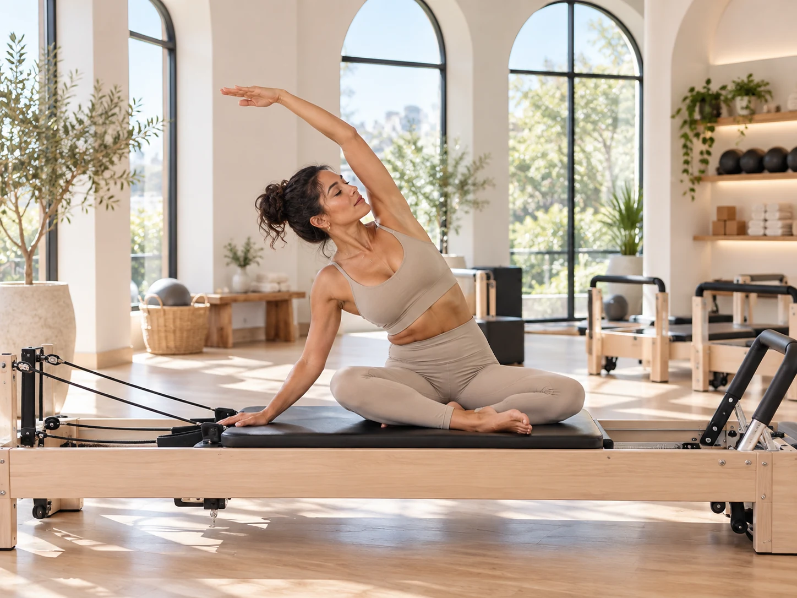
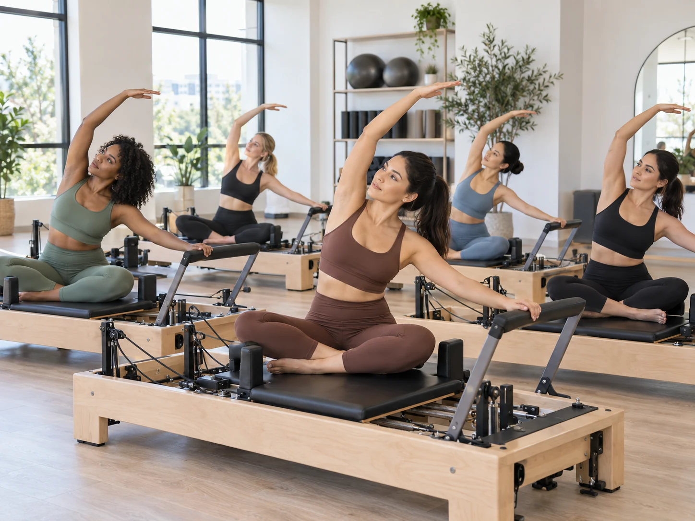

Start with a schedule you can actually repeat
Two sessions a week is a real routine, especially if you are newer to Pilates. Three sessions gives you more practice without making every day feel like a workout day. Four can work well when the classes are not all equally intense and you are sleeping, eating, and recovering normally.
The goal is to make Pilates familiar enough that your body starts recognizing the movements. You want to spend less time figuring out where your ribs, pelvis, shoulders, and feet are supposed to be, and more time actually controlling them.
What results usually show up first
The first changes are often not dramatic mirror changes. Many people notice that they stand taller, feel more stable through the middle of the body, and understand how to move with more control. Exercises that once felt confusing start to feel organized.
Visible changes can follow, but they depend on far more than class frequency. Your starting point, overall activity, nutrition, stress, sleep, and the difficulty of your sessions all matter.

Why more is not automatically better
Doing Pilates every single day is not required to make progress. If every session is hard, piling on more classes can leave you tired, sore, and less precise. Pilates depends on control, and control is harder when your body is exhausted.
A better approach is to mix stronger sessions with easier movement days. A demanding reformer class, a lighter mat session, walking, and mobility can all live in the same week without competing with each other.
How to know your schedule is working
Give a routine several weeks before judging it. Look for practical signs such as smoother transitions, stronger planks, better balance, improved range of motion, and less shaking on movements that used to challenge you.
If you are constantly sore, losing enthusiasm, or dreading class, you may need more recovery. If everything feels easy for weeks, it may be time to progress the exercises, resistance, or class level instead of simply adding more days.
A simple weekly example
A beginner might choose Tuesday and Saturday. Someone who wants more structure might do Monday, Wednesday, and Friday. A four day week could include two stronger reformer classes, one controlled mat session, and one lighter mobility focused session.
The best schedule is the one that makes you feel more capable as the weeks go on. Pilates should build your body up, not leave you feeling like you are always trying to catch up with recovery.
This article is general educational information, not individualized medical advice. If pain, injury, pregnancy, or a health condition affects your movement, speak with a qualified healthcare professional.